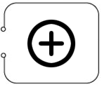

- Meet IKo™
- IKo™ Classic
- IKo™ Jr.
- IKo™ SLIM
- IKo™ STATION
- IKo™ TWIN-STATION
- MU-IKo™ STATION
- ADD-ON OPTIONS
Versatility
FIBRotools™ are flexible and adaptable. Our systems can be combined with a variety of additional systems to create numerous variations on the thin and thick film electroplating process, including:
- Silicone seedless electroplating
- Electroplating under magnetic field
- Electroplating with laser
- Electroplating under ultrasound
- Electroplating with a combination of selected spot laser exposure
- Electroplating in a combination of magnetic field and laser
- Combination of seedless electroplating under magnetic field
- Electrophoresis of organic and inorganic matter
Add-on Products
FIBRotools™ currently offers these add-on options for any IKo™ product.
Nano Wire (NW)
Nano-wire template preparation and electroplating capability. Up to 50V pulse or reverse pulse anodizing and nano-wire electroplating.Seedless Electroplating (SL)
A proprietary wafer holder that enables electroplating uniformity directly on doped silicon, resistance 5e-3 ohm-cm or less.Magnetic field (MG)
Permanent magnet delivering 1000 Oe to the electroplating plane. Easily removed when not in use.0.2µ Filtration capability
Additional Wafer Holder and Anode sets